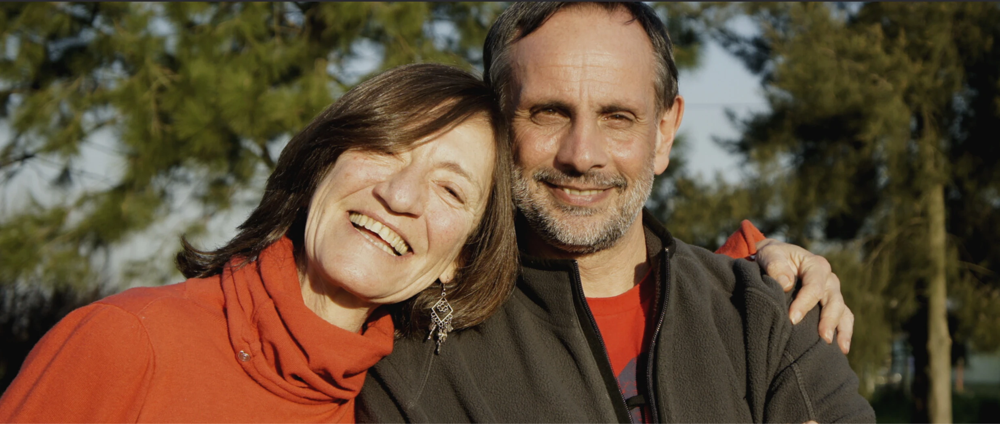

Nuestro equipo
En casagestalt hemos consolidado un equipo multidisciplinario con amplia experiencia en apoyar a personas y organizaciones en sus procesos de cambio. Lo integran Mariana Baquet, Agustín Carranza, Gabriela Catalurda, Triana Fernández, Leandro González, Laura Hopenhaym, Bettina Link, Alicia López, Leonardo Novas, Ana Laura Martínez, Nora Peralta, Diego Perez, Florencia Rossy, Antonella Viglione, y sus directores fundadores Mabel Hopenhaym y Gustavo Nisivoccia.
Mabel es Economista (UDELAR), cuenta con formación nacional e internacional en Capacitación Comportamental empresarial, y en el modelo de Comunicación No Violenta de Marshall Rosenberg. Gustavo es Técnico en Administración (UDELAR), postgraduado en Recursos Humanos (ORT) y con formación nacional e internacional en Dirección Estratégica de Recursos Humanos, y en coaching y Gestalt aplicado al coaching.
Ambos son además Coordinadores de Grupos en Organizaciones y Terapeutas de grupos, familia y pareja.
Cuentan con una extensa experiencia en Uruguay y la región en las áreas de consultoría, capacitación y asesoramiento en materia de Gestión Humana y procesos de cambio en organizaciones públicas y privadas de diversos sectores, ONG's e instituciones educativas. Han realizado varias publicaciones como autores o co-autores en materias de su especialidad.
Hace más de veinte años participaron de la creación del Área Organizacional del Centro Gestáltico de Montevideo. Hace más de diez años fundaron casagestalt, con el propósito de contribuir a ampliar la aplicación de la Gestalt a la transformación y el desarrollo humano y organizacional.